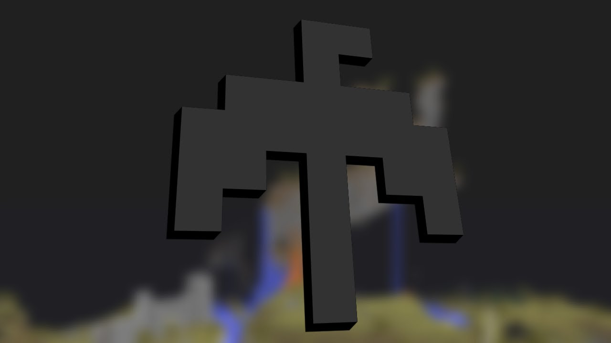
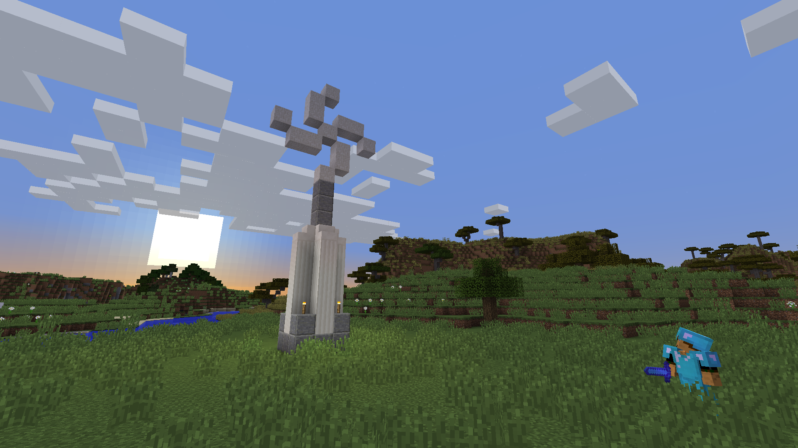

Валькирия считалась мощной группой с 2013 года, которая была ответственна за первые три вторжения Спауна. У них было много знаковых баз на самом сервере. Символом группы является обсидиановая птица, которая считается одним из самых знаковых символов на самом сервере. У них было много названий, таких как группа Валк, валькирийцы, асгардианцы, наряду с Группой Вторжения, все они были одним и тем же. Они были отмечены устрашающей численностью и полным вооружением для участников pvp, а также отличными строителями / редстоунерами на их стороне. Они трижды доминировали в spawn в течение нескольких месяцев и построили несколько самых больших и густонаселенных баз сервера. Короче говоря, Валькирия представляла собой слияние небольших групп и баз, таких как Анатолия, Гитлервуд, Легион Шенандоа и базовая группа Gape
Vortex Coalition (иногда называемая просто VoCo) - это большая группа игроков, которые создают, сражаются и создают мемы на 2b2t и в его сообществе. Обычно в течение годового цикла примерно с мая по январь. Девиз группы - "элитная группа игроков, посвятивших себя тому, чтобы сделать 2b2t лучшим местом" (фраза, предназначенная для разжигания гнева у тех, кому не нравится группа). Vortex Coalition - одна из, если не самая старая активная группа на 2b2t. Они владеют одним из самых густонаселенных серверов Discord, связанных с 2b2t, с более чем 140 участниками.
 первая страница